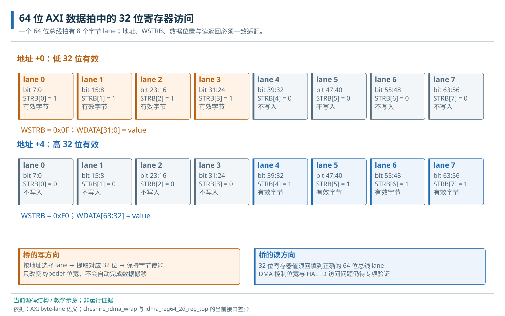

第三篇 · 地址、互连与物理存储
11 · 接口适配与 RegBus
位宽、协议、ID 转换与跨时钟域接口。
本章目录 · 节与小节
解释位宽、协议、ID 转换及跨域边界。 前置：9 · AXI 通道、突发与握手、10 · AXI Crossbar 结构与事务路由。
11.1 Regbus 的最小设备契约
先想象CPU写一个START位，随后轮询DONE并读结果：控制器把这次访问解释成动作，而不是在RAM里保存一个普通整数。MMIO（内存映射输入输出）用CPU地址选中设备，合法访问宽度由该寄存器定义；volatile要求编译器保留相应访问，但不能替代硬件排序、缓存属性或设备完成条件。读FIFO数据可能弹出一项，写1清除（W1C）状态则只清本次写入的1位；这就是为什么不能把所有寄存器当成可随意读改写的普通变量。各设备章会按一次正常操作说明实际副作用。
Regbus 在 valid 与 ready 同时成立的边沿完成一次访问。等待期间 addr/write/wdata/wstrb 保持；读数据和 error 与该成交关联。ready为低的等待周期不能重复触发；若valid与ready连续多个边沿同时为1，则每个边沿都是一笔访问，软件/主端必须按握手推进。W1C 只清被选中字节中的 1 位，命令寄存器每次成交只触发一次，读弹出只能在读成交时发生。
/* 教学契约：clear_mask 由本次处理的事件产生，不把整个旧状态写回。 */
mmio_write32(base + INTR_STATE, clear_mask);
/* start() 先验证 idle 和参数，再写 START；写响应仅代表寄存器成交。 */
/* 等待 COMPLETE/ERROR + 有界计时，读取结果，最后归还 buffer。 */这个小接口仍需验证 byte-enable、RO/WO/W1C、非法偏移、背压、复位中断及请求稳定性。独立教学设备展示可执行契约，DDR/NPU 的控制寄存器则必须来自实际 IP 规范。
FIFO是先进先出队列：写入侧提交一项，读取侧消费最早的一项，两侧可暂时以不同速度工作。空/满状态限制当前能做的操作，“写入FIFO成功”只说明内容入队；还需等控制器消费和外部事务完成。以UART为例，发送FIFO有空位与最后停止位已经离开TX是两个不同条件；详细过程见UART正常发送。
11.2 位宽、协议和 ID 转换
11.2.1 byte lane 与有效字节
64 位总线的一拍有 8 个字节位置，称为 byte lane。访问地址 +4 的对齐 32 位寄存器时，SIZE=2，有效数据位于高四个 lane，完整写使能通常为 0xf0。例如 0x11223344 在总线上可呈现为 0x1122334400000000。桥接到 32 位目标后，应得到数据 0x11223344、使能 0xf；单纯截低 32 位会丢失此次写入。

11.2.2 转换后的拍数与 LAST
宽转窄还可能把一个输入数据拍拆成多个输出拍，调整长度与 LAST，并重新组装读返回。对齐 INCR 的 4×64 位全宽数据是 32 字节，转成 32 位需要 8 拍；窄访问、部分写和非对齐请求按转换器支持范围分别验证。4 KiB 边界、错误响应、在途容量和原子扩展都属于转换契约。
Regbus 把一次寄存器请求合成 valid/write/addr/wdata/wstrb，响应含 ready/rdata/error。普通 MMIO 使用 i_reg_atomics → cut → axi_to_reg_v2(RegDataWidth=32) → reg_demux。协议转换把分离的 AXI 通道恢复成一次寄存器访问，副作用在成交时触发。iDMA 控制口采用另一条旧桥，iDMA 控制接口验收门槛说明其宽度缺口。
11.2.3 ID 收缩与原子扩展边界
CPU 原始 ID 为 4 位，经 axi_id_serialize 适配成系统输入的 2 位，再由 Crossbar 扩展来源位。缩窄需要映射、队列和并发约束，直接丢高位会混淆返回。ATOP 是 AXI4 之外、来自 AXI5 的原子操作扩展，当前主存原子单元在 LLC 上游处理相应语义，下游普通 AXI4 DDR 按这个接口边界接入。
11.3 跨时钟与复位边界
跨时钟域传输（CDC）面临两端采样时刻不同的问题。单比特状态可采用适当同步结构；整组地址或数据若逐位同步，可能把不同时刻的位拼在一起。AXI CDC 通常用异步 FIFO 保存数据，通过同步后的指针表达队列占用，并维持各通道关联。FPGA DDR wrapper 使用实际的 axi_cdc 实例。
复位跨域（RDC）还涉及事务生命周期。目标已接受 AW、尚未返回 B 时，单独复位目标会让上游永久等待。系统需约定停止新请求、排空或隔离、复位、重新初始化和恢复服务；对端不再响应时还需定义有界恢复。这也是未来 DDR 就绪与设备时钟门控要共同设计的部分。